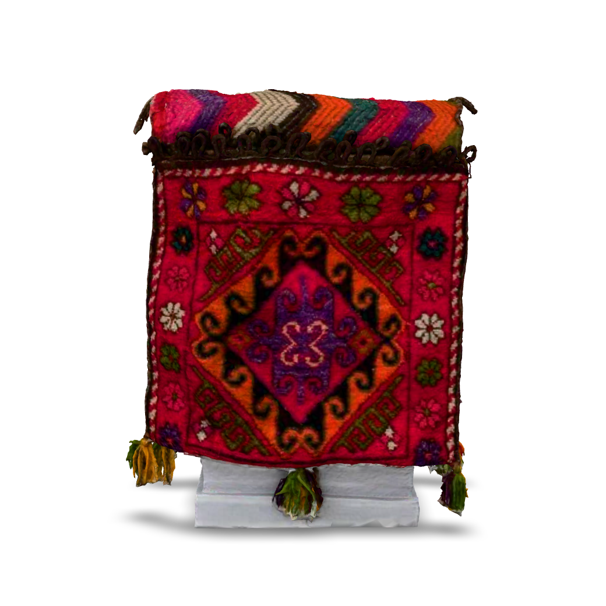
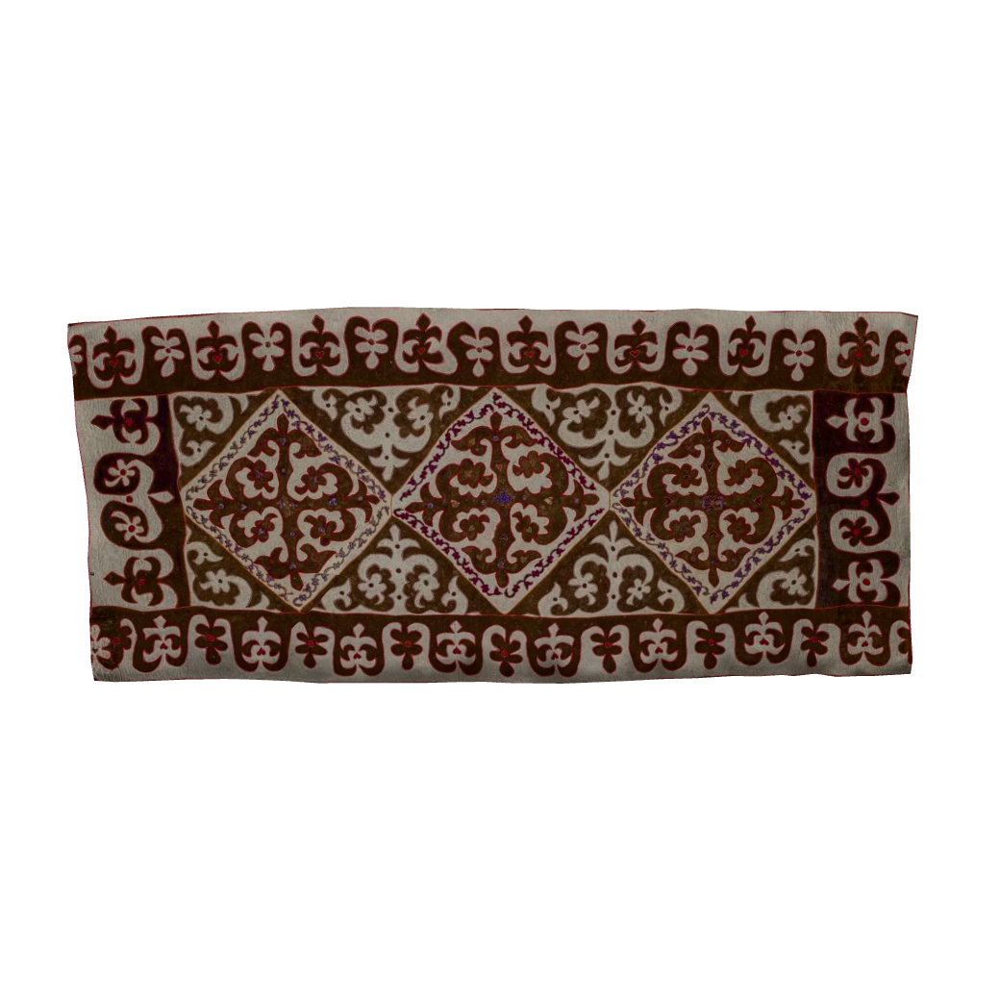
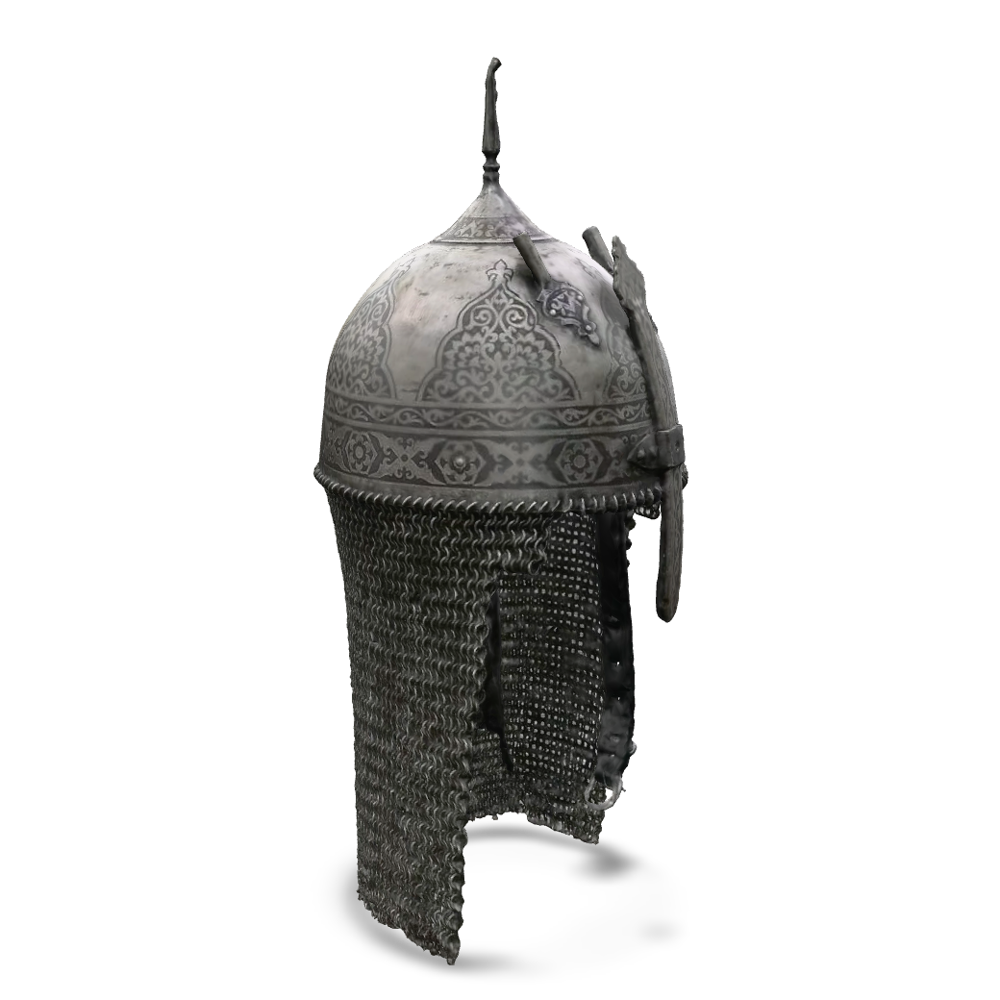

Қазақ мұралары
3д форматында
30экспонат
303D моделі
150сұрақ


 киіз үй
киіз үй
 домбыра · қара ағаш
домбыра · қара ағаш
 қобыз · қайың
қобыз · қайың
 шапан
шапан
 тақия · ер
тақия · ер
 тақия · қыз
тақия · қыз
 сәукеле · салтанат
сәукеле · салтанат

 қамшы · өрім
қамшы · өрім


 қой сүйегі
қой сүйегі





Домбыра — қазақтың жаны. Қарағаш пен қайыңнан жасалған шанағы, ішегі — түйенің шудасы, кейін жіп. Күйші саусағының жанасуымен ғасырлар үнін жеткізеді.
Қазақ жерінің әр түкпірі — жеке дастан. Картадан облысты немесе қаланы басып, өңірдің батырлары, ескерткіштері мен дәстүрлерімен танысыңыз.
Түркі әлемі — 180 млн адам, 40+ тіл. Мұра ондаған елде жалғасын табуда.
Әрбір экспонат үшін жеке викторина. Оның тарихы, материалы мен дәстүрі туралы 5 сұраққа жауап беріңіз.